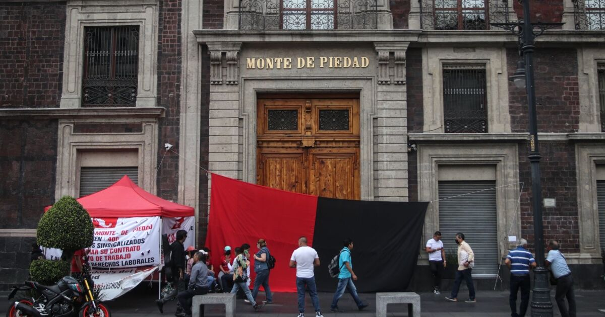

El Sindicato del Nacional Monte de Piedad afirmó que levantará la huelga automáticamente si las autoridades del instituto aceptan darles un incremento salarial del 5 por ciento. A través de un comunicado explicaron que dicho incremento representará un aumento de solo 1.66 por ciento anual durante los últimos 3 años, que van de 2021 a 2023, periodo en el que los trabajadores del sindicato no han tenido ningún aumento por ley.
“Como muestra de buena voluntad y propuesta por parte del sindicato, en un inicio se buscaba el 12 por ciento, pero se ha decidido aceptar solo el 5 por ciento, con lo cual se levantaría la huelga, aunque no se haya definido aún el Contrato Colectivo de Trabajo y continúe en negociaciones”, afirmó el sindicato. El documento también condenó que el director general del Nacional Monte de Piedad, así como otros directivos, tienen ingresos superiores a 500 mil pesos mensuales, más comisiones y prestaciones onerosas.
"Este hecho no es ilegal; sin embargo, moral y éticamente es inaceptable, ya que han despedido a 400 trabajadores bajo el pretexto de estar en una situación financiera inviable. Y aún peor, con el mismo pretexto que no tiene fundamento, no han querido incrementar el salario de los trabajadores durante los últimos 3 años. Se adjuntan pruebas que demuestran ingresos, costos laborales, el incremento de activos y remanentes, así como la disminución de pasivos con las declaraciones fiscales hechas por la misma institución ante las autoridades del SAT”, condenó. Además, señaló que el salario mínimo en México de 248.93 pesos ha superado el salario base de los trabajadores sindicalizados, que corresponde a los mozos de sucursales foráneas que tienen un ingreso de 246.35 pesos al día. Añadió que el sueldo más elevado entre los trabajadores sindicalizados corresponde al responsable de la depositaría, con un salario de 491.19 pesos al día.
